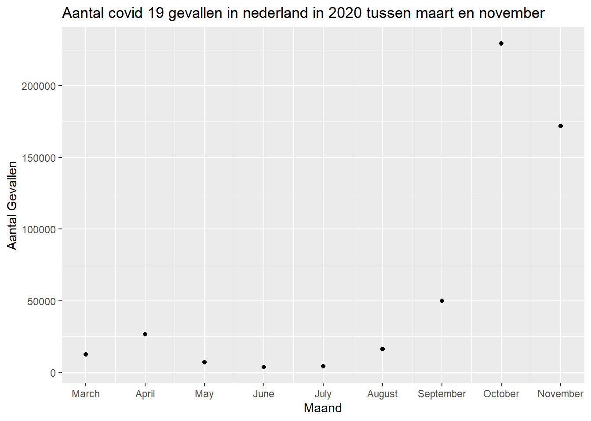
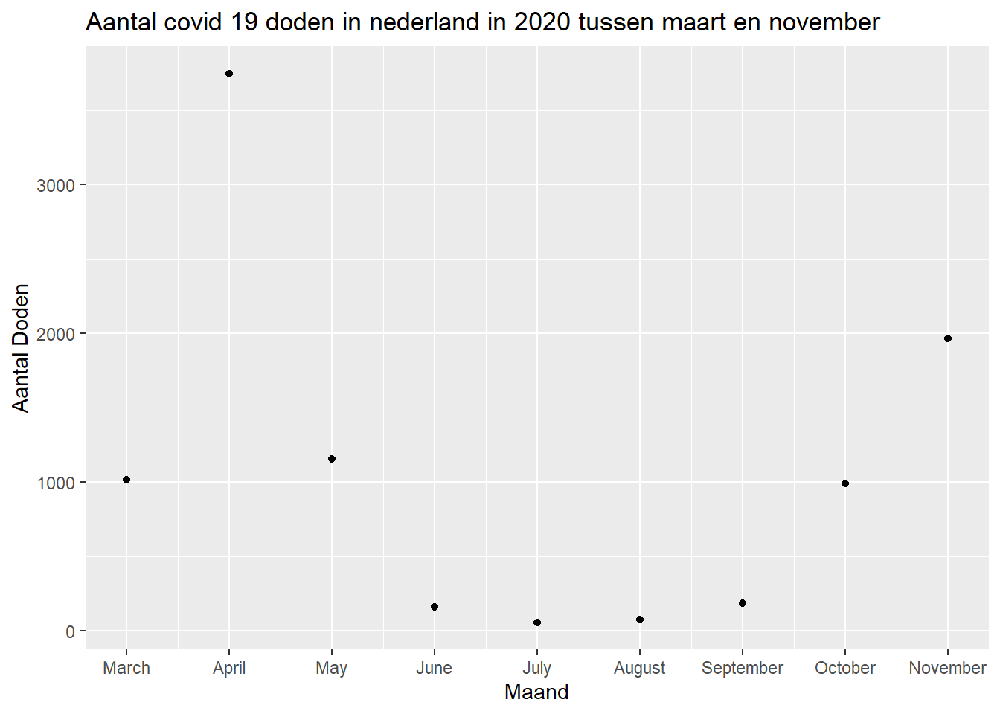

Opdracht 9: RMarkdown parameters & presentations
In deze opdracht zal er een geparametriseert rapport gecreëerd worden voor COVID-19-gevallen. Het rapport zal interactief zijn, zodat gebruikers parameters kunnen instellen zoals land, jaar en periode. We zullen gebruikmaken van COVID-19-casegegevens van het ECDC en grafieken tonen voor gevallen en sterfgevallen. Het uiteindelijke rapport zal een flexibel en informatief middel zijn om COVID-19-gegevens te verkennen op basis van specifieke criteria.
9.1: COVID-19-rapport zonder parametrisering
Eerst wordt de data ingeladen, omdat het een CSV bestand is wordt er gebruik gemaakt van de read.csv functie.
# inlezen van de data
covid_19_data <- read.csv("~/HU_ILC_DS2/Datascience2_portfolio/data/data_portfolio_opdracht_9.csv")Vervolgens moet de data geselecteerd worden. Er is hier gekozen voor covid 19 gevallen en doden in 2020 in Nederland in de periode maart tot november.
#dataset filteren voor 2020 Nederland, en periode maart tot november
covid_19_data_filtered <- covid_19_data %>%
filter(year == 2020,
countriesAndTerritories == "Netherlands",
between(month, 3, 11), )
#berekenen van het aantal cases per maand
cases_per_maand <- covid_19_data_filtered %>%
group_by(month) %>%
summarise(cases_per_maand = sum(cases))
#berekenen van het aantal doden per maand
deaths_per_maand <- covid_19_data_filtered %>%
group_by(month) %>%
summarise(deaths_per_maand = sum(deaths))Tot slot kan de verkregen data geplot worden, hiervoor wordt ggplot2 gebruikt. om de maanden te weergeven in de juiste volgorde is de regel; “r scale_x_continuous(breaks = 1:12, labels = month.name) +” toegevoegd. deze regel zorgt ervoor dat de x-as van een plot met continue data wordt aangepast.
# plot voor het aantal cases per maand
ggplot(cases_per_maand, aes(x = month, y = cases_per_maand)) +
geom_point() +
scale_x_continuous(breaks = 1:12, labels = month.name) +
labs(title = "Aantal covid 19 gevallen in nederland in 2020 tussen maart en november",
x = "Maand",
y = "Aantal Gevallen")
# plot voor het aantal doden per maand
ggplot(deaths_per_maand, aes(x = month, y = deaths_per_maand)) +
geom_point() +
scale_x_continuous(breaks = 1:12, labels = month.name) +
labs(title = "Aantal covid 19 doden in nederland in 2020 tussen maart en november",
x = "Maand",
y = "Aantal Doden")
9.2: COVID-19-rapport met parametrisering
Eerst wordt de data ingeladen, omdat het een CSV bestand is wordt er gebruik gemaakt van de read.csv functie.
# inlezen van de data
covid_19_data_2 <- read.csv("~/HU_ILC_DS2/Datascience2_portfolio/data/data_portfolio_opdracht_9.csv")
# maak een object van de parameters
param_country <- params$country
param_year <- params$yearVervolgens moet er verder gewerkt worden met parametrisering. er wordt hier gebruikt gemaakt met de params; country: “Austria”, year: 2020 en period: “3-11”. Deze zijn aan te passen in het bestand index.rmd naar een ander param. als je bijvoorbeeld “Austria” veranderd voor “Netherlands” zullen de gegevens voor Nederland gegeven worden.
Bij deze params moeten vervolgens ook de cases en deaths per maand berekend worden
# dataset filteren voor gegeven parameters
covid_19_data_filtered_2 <- covid_19_data_2 %>%
filter(year == param_year,
countriesAndTerritories == param_country, )
# Splitten van de periode in start- en eindmaand
period_parts <- strsplit(params$period, "-")[[1]]
start_month <- as.integer(period_parts[1])
end_month <- as.integer(period_parts[2])
# Dataset filteren op de opgegeven periode
covid_19_data_filtered_3 <- covid_19_data_filtered_2 %>%
filter(month >= start_month,
month <= end_month)
# berekenen van het aantal cases per maand
cases_per_maand_2 <- covid_19_data_filtered_3 %>%
group_by(month) %>%
summarise(cases_per_maand = sum(cases))
# berekenen van het aantal doden per maand
deaths_per_maand_2 <- covid_19_data_filtered_3 %>%
group_by(month) %>%
summarise(deaths_per_maand = sum(deaths))om de namen van de maanden in de gekozen periode te kunnen weergeven moeten de getallen omgezet worden naar de namen, dit kan als volgt;
# verandanderen van numerieke waarde van de maand naar de naam van de maand
month_name_start <- month.name[start_month]
month_name_end <- month.name[end_month]Tot slot kan de verkregen data geplot worden, hiervoor wordt ggplot2 gebruikt. om de maanden te weergeven in de juiste volgorde is de regel; “r scale_x_continuous(breaks = 1:12, labels = month.name) +” toegevoegd. deze regel zorgt ervoor dat de x-as van een plot met continue data wordt aangepast.
#plot voor het aantal cases per parameter
ggplot(cases_per_maand_2, aes(x = month, y = cases_per_maand)) +
geom_point() +
scale_x_continuous(breaks = 1:12, labels = month.name) +
labs(title = paste("Aantal COVID-19 doden in", param_country, "in", param_year, "in de periode", month_name_start, "tot", month_name_end),
x = "Maand",
y = "Aantal Gevallen")
# plot voor het aantal doden per parameter
ggplot(deaths_per_maand_2, aes(x = month, y = deaths_per_maand)) +
geom_point() +
scale_x_continuous(breaks = 1:12, labels = month.name) +
labs(title = paste("Aantal COVID-19 doden in", param_country, "in", param_year, "in de periode", month_name_start, "tot", month_name_end),
x = "Maand",
y = "Aantal Doden")